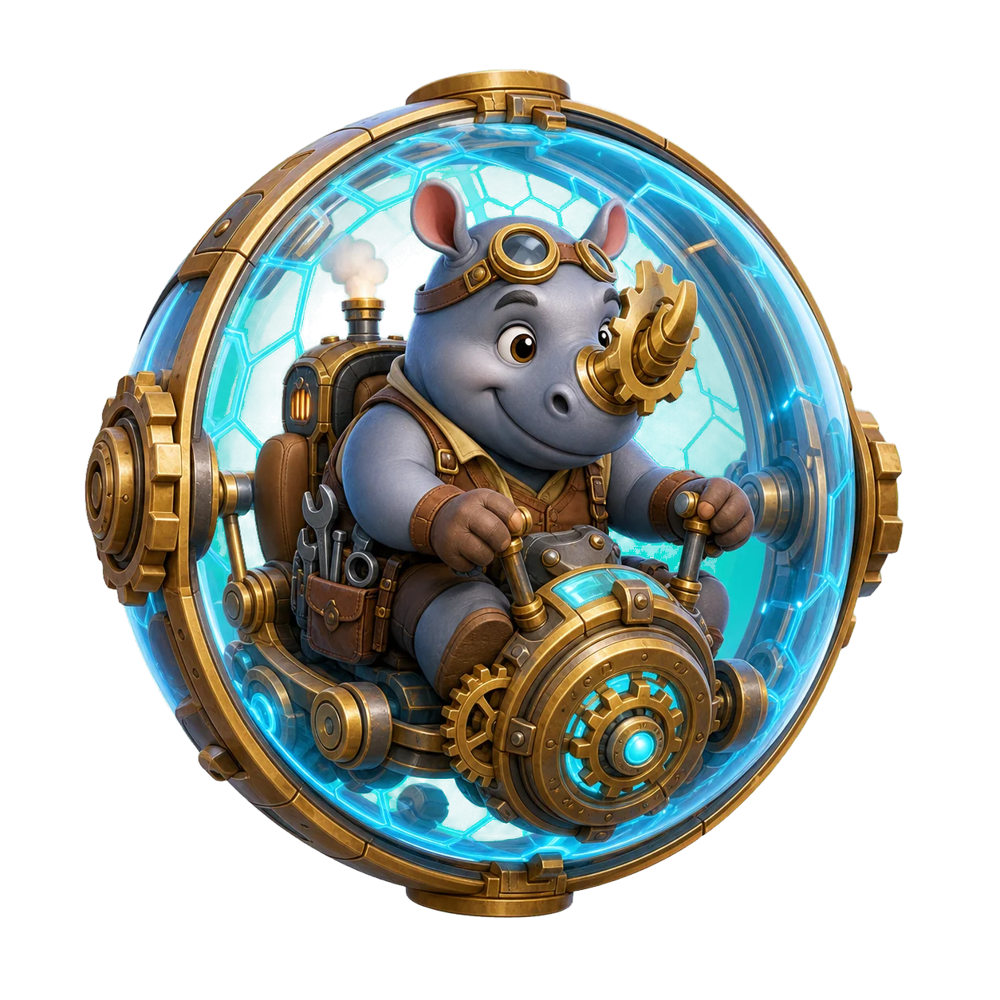
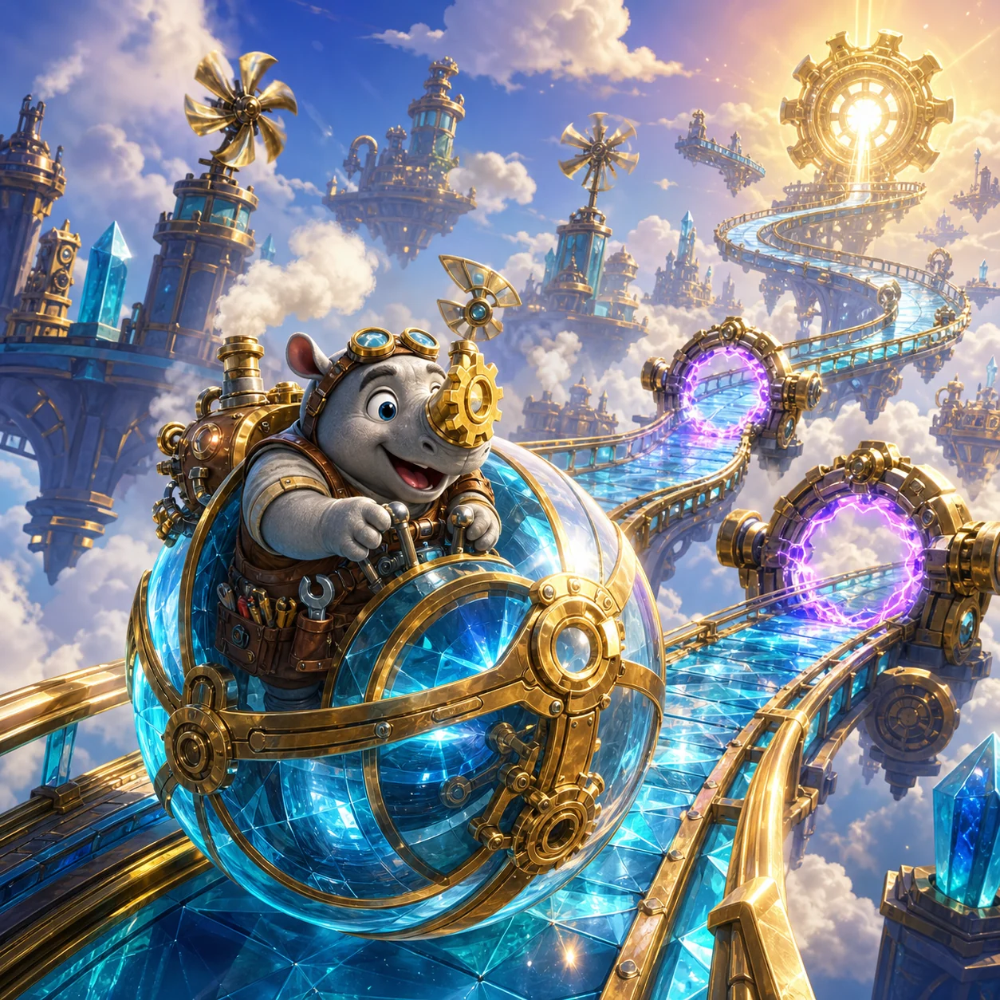
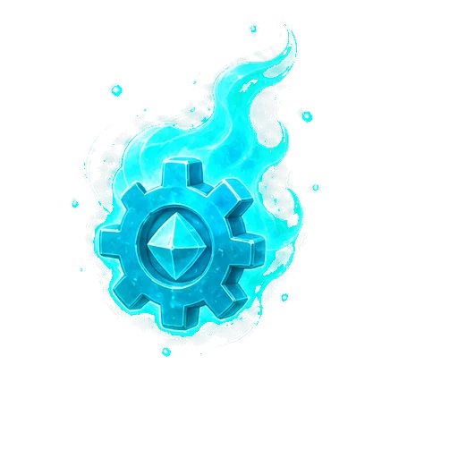

How to play
- Drag left or right across the course to steer.
- Push upward to accelerate or pull downward to brake.
- Avoid gates, bumpers, wind and broken plates; reach the beacon.

Warming the Gearglobe…
Steer Rux left and right, control the Gearglobe's speed, and stay on the skyrail until the foundry beacon.
0 / 30Gear Horn Rux built a crystal Gearglobe to reconnect thirty floating foundry beacons. Every cloudrail demands active steering: accelerate through broad sections, brake before narrow turns, and recover from a fall at the latest checkpoint while a shield remains.
Six chapters add moving gates, boosts, fracture plates, jump gaps, crosswinds, magnetic rails, split routes, and Crownrail combinations.
Fast rolling builds Flow and improves the medal time. Braking gives more steering control. The safest line is not always the fastest line.
Medals, best times, Gear Sparks, and workshop upgrades stay in this browser. No login or personal information is required.
Drag the rail and choose an unlocked course.
Spend saved Gear Sparks on permanent handling and recovery upgrades.

A cyan-violet cosmetic trail. It never changes course physics.
Steer Rux to the foundry beacon.
Continue returns to the exact rail position. Returning to Courses ends this run.